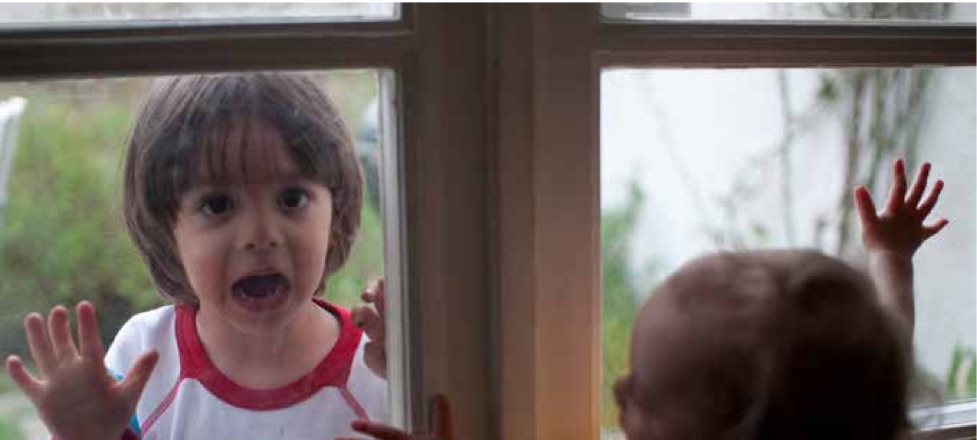

Intervju med Jessica Körning Ljungberg
Att plocka fram lärande
När Jessica Körning-Ljungberg fick i uppdrag av sin rektor att delta i ett projekt om livslångt lärande, visste hon inte riktigt vad hon gav sig in i. Uppdraget lät initialt ganska abstrakt, att utforska attityder till lärande. Men det kom att förändra hennes syn på vad lärande faktiskt är – och hur det kan stärkas. Hon beskriver hur projektet öppnade dörrar till ett utforskande av något djupt mänskligt: vår förmåga och vilja att utvecklas. Och kanske viktigast av allt, hur självreflektion kan fungera som motor i det lärandet.
Jessica Körning-Ljungberg, professor i teknisk psykologi Luleå tekniska universitet
Lärande handlar i grunden om att behandla inlärningen som en process, inte som ett tillstånd.. Det innebär att det inte bara sker när vi sitter i en föreläsningssal eller klickar oss igenom en kurs online. Det sker när vi stannar upp, tänker efter, formulerar vad vi vet eller inte och vad vi vill förstå. Det pågår kontinuerligt och kanske ännu mer när vi uttalar det högt, eller delar det med någon annan. Jessica lyfter fram retrieval practice eller testbaserat lärande, som en central teori. Forskning visar att vi lär oss bättre när vi behöver plocka fram information vi redan mött, snarare än bara läsa eller lyssna på den passivt.
“Tänk dig ditt långtidsminne som en skog där varje träd är ett minne. Varje gång du lär dig något nytt växer ett nytt träd, och varje gång du plockar fram minnet växer ytterligare ett träd som liknar det första. Med tiden binds träden samman till ett starkare nätverk – ditt minne blir tätare och mer lättillgängligt.” säger Jessica.
Samma princip gäller när vi reflekterar högt, när vi får sätta ord på våra mål, utvecklingsområden, kunskapsluckor och insikter. Och det här förstärks ytterligare när vi gör det i dialog med en mentor eller någon annan som lyssnar. Någon som finns där inte för att undervisa, utan för att ställa rätt frågor.
Attityder och reflekterande lärande
Men vad kan egentligen en attityd till lärande innebära och vara? Det har varit en återkommande fråga i arbetet med vad som driver lärande hos människor. Det är inte så enkelt som att vilja eller inte vilja lära. En attityd är något vi bär med oss, en inställning, kanske en värdering som inte alltid syns i vårt beteende. Det räcker alltså inte att tycka att lärande är viktigt, man måste också kunna skapa förutsättningar för att lärandet ska bli verklighet. Vi kan ha positiva attityder till massor av saker, men det betyder inte att vi agerar i linje med dem. För att det ska hända något måste vi börja behandla lärande som något vi aktivt planerar, håller en plats för och följer upp.
Här lyfter Jessica att det behövs ett fokusskifte. I litteraturen fann hon starkt stöd för att reflektion – särskilt i samspel med en mentor – stärker den inre motivationen. Vi har i samhället länge fokuserat på kunskapsresultat, vi är vana att jobba med och mäta dem, men för att gynna lärandet behöver vi börja tänka på själva lärandet som en aktivitet med egna process mål. Det handlar bland annat om att reflektera och ställa frågor till sig själv längs vägen. Vad är jag bra på? Vad vill jag bli bättre på? Vad är nästa steg?
I sitt sökande efter en teoretisk grund vände sig Jessica till vetenskapliga rön som visar hur just reflektion – särskilt om den görs ihop med någon annan – kan vara en kraftfull katalysator för inre motivation (Deci & Ryan, 2000). En mentor eller samtalspartner kan fungera som spegel, ett bollplank eller förstoringsglas som kan ge utrymme för tänkande. Det blev tydligt att det inte bara handlar om viljan att lära, utan också om hur man tänker om sitt eget lärande. Det är där självreflektionens kraft kommer in.
Inre och yttre drivkrafter – och när det oväntade blir meningsfullt
Det finns en tydlig skillnad mellan det som driver oss inifrån, sånt som nyfikenhet, glädje, intresse, och det som styr oss utifrån – betyg, pengar, eller kanske social bekräftelse. Det innebär att inre och yttre motivation inte är samma sak, och det är den inre varianten de flesta forskare vill åt när det gäller det långsiktiga och livslånga lärandet. Men ibland kan de yttre drivkrafterna leda oss till något som sedan väcker de inre.
“Jag läste en gång en kurs i svensk ekonomisk historia. Det lät så tråkigt så klockorna stannade. Jag tog den bara för att fylla tid och kunna få studiemedel. Men den visade sig bli en av de mest givande kurserna jag har läst.”
Poängen är att det ibland krävs ett yttre tryck för att sätta oss i rörelse. Om förutsättningarna sen är rätt, kan den inre motivationen efter ett tag ta över. Den sortens motivation håller längre, bär oss genom svårigheter och kräver inte ständig extern belöning. Jessica ser det dock som ett problem att vi ofta designar utbildning och lärinsatser för den yttre motivationen, för prestation snarare än process. Hon menar att vi behöver hitta sätt att locka fram det där inre drivet, även när ämnet först känns avlägset eller tråkigt. Även om vi inte alltid är intresserade från början, kan ett frö av nyfikenhet väckas – genom en fråga, en spegling, ett sammanhang.
Mentorskap, trygghet och framplockning som biologisk process
När Jessica Körning-Ljungberg talar om reflektion återkommer hon ofta till betydelsen av att få formulera sig själv inför någon annan. Det är där mentorskapet kommer in, genom just en person som lyssnar, speglar och hjälper till att kalibrera tankarna. Varje gång vi plockar fram kunskap, när vi sätter ord på det vi vet eller tror, stärks minnesspåren.
“Det finns en direkt biologisk förklaring till varför det här är en bra teknik.”
Jessica liknar det alltså vid att bygga fler stigar i hjärnan – fler vägar att ta oss fram till det vi lärt oss. Samtidigt är förutsättningarna viktiga. Psykologisk trygghet behöver stå i centrum. Betyg och jämförelser behöver användas med försiktighet. Om man jobbar med utgångspunkten att alla deltagare i lärinsatser är bildningsbara, får man också ett klimat där man vågar växa. Det handlar om att våga uttrycka sina tankar, testa sina hypoteser och ibland också erkänna att man inte kan. Det kräver att någon tar emot allt det, i ett klimat där man inte behöver vara rädd – inte för att göra fel, inte för att bli jämförd och inte för att vara nybörjare.

Självledarskap, avatarer och det digitala landskapet för lärande
En viktig del i projektet Läran att lära har varit att pröva hur självreflektion kan integreras i digitala lärmiljöer. Jessica och kollegorna i projektet utvecklade därför ett webbverktyg – Learnable – där deltagare fick spela in egna reflektioner kring frågor om mål, motivation och lärande under kursens gång. Men det var inte helt enkelt att få människor att använda verktyget. Jessica har i sina vetenskapliga kontexter gjort experimentell forskning i över 20 år, men aldrig varit med om att det var så svårt att få folk att delta.
“Det säger något om hur lågprioriterad reflektion är.”
Samtidigt blev det tydligt hur meningsfull den också är. För dem som ändå genomförde reflektionen, uppstod ofta något nästan omvälvande. Att höra sig själv formulera sina mål eller inse vad man redan lärt sig skapade en känsla av ägande skap och fördjupad förståelse. Många upplevde att de såg sitt eget lärande tydligare än tidigare.
Jessica blev i arbetet med detta även nyfiken på vad som händer om vi ersätter den mänskliga mentorn med en avatar. I en pågående scoping review granskar därför hon och kollegorna över 4 500 vetenskapliga studier för att förstå mer om hur digitala mentorer – såsom exempelvis Duolingos röststyrda avatar – kan stärka motivation och lärande.
“Vi tror att avatarer kommer bli allt vanligare. Frågan är: kan de lyssna, spegla och väcka reflektion på samma sätt som en människa? Och hur ska de i så fall se ut. Ska de kanske till och med likna oss själva?”
Flera studier antyder att när mentorn eller avataren liknar användaren i röst, utseende eller språk kan känslan av självförmåga förstärkas. Här vill Jessica se mer forskning innan man drar säkra slutsatser.
Projektet Läran att lära blev inte bara en resa i forskningsmetoder eller pedagogisk design – det blev också en personlig resa för alla som deltagit. Jessica återkommer flera gånger till hur mycket hon själv har lärt sig under arbetets gång. Hon har också blivit mer medveten om vilken typ av miljö som krävs för att lärande verkligen ska få fäste. Det räcker inte med innehåll. Man måste designa ramarna runt lärandet, klimatet, relationerna och runt känslan av mening. Vi pratar ofta om vad människor ska kunna. Men mer sällan om hur de ska vilja. Därför behöver vi förstå drivkrafterna – och bygga lärmiljöer som väcker dem.
Playguide: Så kan du designa för framplockning
Börja varje pass med framplockning med låg tröskel
Två–tre korta frågor från förra momentet, utan betyg och med snabb återkoppling. Sätter hjärnan i “hämtläge” och stärker minnesspåren.
Växla frågetyp från igenkänning till fri återgivning
Gå från sant/falskt > flervalsfrågor > kortsvar > fri förklaring. Öka ansträngningen gradvis (“ desirable difficulties”).
Sprid ut inhämtning av kunskap över tid
Planera flera korta återbesök i stället för ett långt. Spacing + upprepad framplockning ger bättre långtidsminne.
Låt muntlig framplockning räknas
Muntlig framplockning ger effekt. Säg saker högt i par, team eller till en coach. Det befäster lärandet och stärker konsolidering av minnen.
Ge omedelbar återkoppling i rätt mängd
När återkopplingen kommer direkt, och i lagom mängd, blir den mest lärande. Visa kort en enkel modell eller hur svaret kan se ut, låt sen personen själv justera och göra om sitt resultat om i en ny form. På så sätt flyttas fokus från rätt eller fel till lärande i rörelse. En avslutande fråga som pekar framåt – ”vad vill du förstå mer av nu?” – håller energin och motivationen kvar.
Bygg trygghet och normalisera misstag
Framplockning ska vara präglat av låg risk. Tydliggör att fel är bränsle för lärande, inte underlag för betyg.
Konkreta exempel i tre miljöer
I en kurs
Starta med 3 “minutkort” där deltagarna förklarar gårdagens främsta insikt med egna ord, följt av en miniquiz och 60-sekunders “exit retrieval” där alla skriver en fråga till sitt framtida jag.
På jobbet
Veckovis “mikro-retrospektiv”: var och en säger högt vad de lärde sig, vilken princip de kan återanvända och vad som är nästa kunskapslucka eller utmaning man vill ta sig an; teamet kommer överens om nästa steg.
Vid självstudier
Läs i korta block; stäng boken och skriv förklaringar ur minnet. Återkom nästa dag med en ny fråga och ett annat exempel.
Vanliga fallgropar
Bara flervalsfrågor på ytnivå Ingen spacing - allt på en gång
Quiz utan feedback Enbart möjlighet att visa kunskap i skrift Bedömningsstress. Framplockning är inte bara eller kanske ens huvudsakligen till för bedömning.